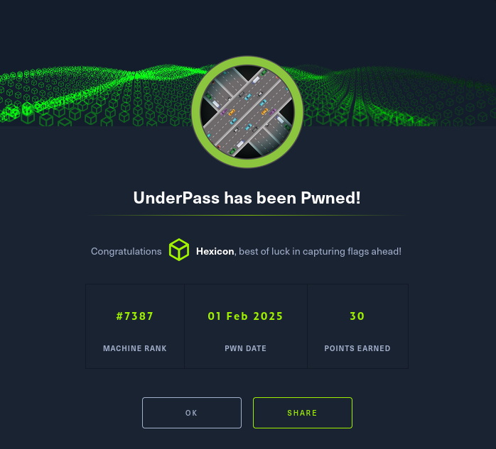

UnderPass

UnderPass was a methodical Linux box that required multi-faceted enumeration. Initial TCP scanning revealed only standard SSH and HTTP services, but UDP scanning uncovered an SNMP service, which mentioned daloradius. After determining the default credentials didn't work on the standard login page, I discovered an alternative login interface through directory enumeration. Once authenticated, I extracted and cracked an MD5 hash for user svcMosh, providing SSH access to the box.
Privilege escalation leveraged the user's sudo permissions to run mosh-server, which spawned a detached process that could be connected to as root by capturing the provided connection string and using it as an authentication key with the mosh client. The box demonstrated the importance of thorough port scanning across protocols, the value of default credential research, and the security risks of misconfigured sudo permissions for network services.
User flag
The nmap scan reveals two ports. SSH on 22 and HTTP on 80
However... The page on port 80 is just the default apache page.
UDP port scanning with nmap
Scanning all 65535 ports did not yield anything new. The next thing to try would be scanning via UDP.
While nmap doesn't bode well with UDP scanning, its still able to perform it.
To perform an UDP scan with nmap, I'll add the -U flag to my command.
nmap -sUVC -Pn 10.10.11.48
The scan reveals an SNMP server running on 161, and it mentions a 'daloradius' server.
Enumeration of the daloradius service
Searching through google allowed me to quickly discover a way to login into daloradius, as well as the default credentials for doing so.
To login to the server, enter in it's IP address and add /daloradius to the path. The default username is administrator and password is radius.
However, when I tried to reach it directly, I was denied with an error code of 403.

I used dirsearch against the /daloradius endpoint to see if there were any interesting directories I could look into.
Then I did the same thing, but with /daloradius/app.
A login.php endpoint was discovered. I'll navigate to it via my browser.

I tried using the default credentials on the login page, but it didn't allow me to login.
I used dirsearch again, this time with a different wordlist, and found one more interesting endpoint.
Which contains a different login page.
I'll try using the default credentials here as well.
Cracking the MD5 hash of svcMosh
After navigating to the users list, I discovered that the credential hash for svcMosh was displayed and easily obtainable.
Since this is an MD5 hash, I'll "crack" it quickly by using crackstation.
svcMosh | underwaterfriends
I will try to SSH into the box with these newly uncovered credentials.
Root flag
Using the mosh-server to gain a root shell
Svc_Mosh can run the mosh-server as sudo. I'll run this command, just to see what will happen.
It spawned a detached mosh-server process, and gave back a string together with a port number.
Since this is a server, I assumed that there was also a client that I could use.

And I was right. However, if I try to connect like this, it'll throw an error.
MOSH_KEY environment variable not found.
That string I've mentioned earlier is more than likely the very key I'm missing here.
I'll append MOSH_KEY=(string) at the beginning of my client command, and it should work this time.
Rooted!